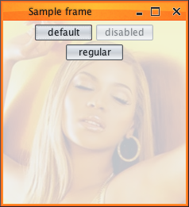
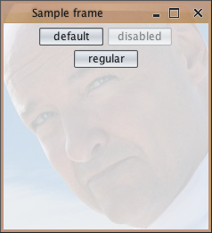
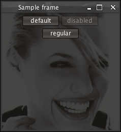
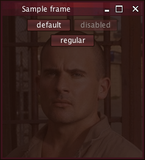

Substance skin can have an optional watermark. The watermark of the current skin is painted over the background of most of the containers (such as panels, tool bars etc). While most action components (such as buttons or combo boxes) do not show the watermark overlay, a specific skin can define a custom alpha value for certain component states (mostly disabled). In this case, the watermark painting from the parent will be partially displayed on the child component.
There is no need to mark your containers as non-opaque to get the watermark painting. The core library comes with four watermarks. Additional watermarks are bundled with the extras pack.
Due to performance considerations, it is recommended not to use any watermark at all. This results in about 20-30% improvement for both static and dynamic scenarios.
/**
* Draws the watermark on the specified graphics context in the specified
* region.
*
* @param graphics
* Graphics context.
* @param c
* Component that is painted.
* @param x
* Left X of the region.
* @param y
* Top Y of the region.
* @param width
* Region width.
* @param height
* Region height.
*/
public void drawWatermarkImage(Graphics graphics, Component c, int x,
int y, int width, int height);
/**
* Updates the current watermark image.
*
* @param skin
* Skin for the watermark.
* @return <code>true</code> if the watermark has been updated successfully,
* <code>false</code> otherwise.
*/
public boolean updateWatermarkImage(SubstanceSkin skin);
/**
* Draws the preview of the watermark image.
*
* @param g
* Graphic context.
* @param x
* the <i>x</i> coordinate of the watermark to be drawn.
* @param y
* The <i>y</i> coordinate of the watermark to be drawn.
* @param width
* The width of the watermark to be drawn.
* @param height
* The height of the watermark to be drawn.
*/
public void previewWatermark(Graphics g, int x, int y, int width, int height);
/**
* Disposes the memory associated with <code>this</code> watermark.
*/
public void dispose();
These methods are used at runtime to paint watermarks on the corresponding components.
Substance provides four core watermarks. The
Null watermark in
org.pushingpixels.substance.api.watermark.SubstanceNullWatermark
draws a translucent fill:
The Stripes watermark in
org.pushingpixels.substance.api.watermark.SubstanceStripeWatermark
overlays
a pattern of one-pixel stripes:
The Crosshatch watermark in
org.pushingpixels.substance.api.watermark.SubstanceCrosshatchWatermark
overlays
a pattern of diagonal hatches:
The noise-based Plankton watermark in
org.pushingpixels.substance.api.watermark.SubstancePlanktonWatermark
overlays
a random pattern of quasi aquatic life:

The
org.pushingpixels.substance.api.watermark.SubstanceImageWatermark
class provides an option to use an image-based watermark. To construct an image watermark, use
one of the following constructors:
/**
* Creates an instance with specified image.
*
* @param imageLocation
* Image location. Can point to a local file or HTTP URL (needs
* to start with <code>http</code> in the later case).
*/
@SubstanceApi
public SubstanceImageWatermark(String imageLocation)
/**
* Creates an instance from the specified input stream.
*
* @param inputStream
* Input stream.
*/
@SubstanceApi
public SubstanceImageWatermark(InputStream inputStream)
Here are examples of image-based watermarks:
   By default, the image is centered in the screen and scaled down if necessary.
To change the default behavior, use the following API in the
SubstanceImageWatermark class:
/**
* Sets image watermark kind.
*
* @param kind
* Image watermark kind.
*/
@SubstanceApi
public void setKind(ImageWatermarkKind kind)
Where SubstanceConstants.ImageWatermarkKind
enum defines the following kinds of image watermark:
Here is an example of APP_TILE image watermark kind:

The default opacity of the image watermark is 0.2 and can be changed by using the
following API in the
SubstanceImageWatermark class:
/**
* Sets image watermark opacity.
*
* @param opacity
* Image watermark opacity.
* @throws IllegalArgumentException
* if the argument is not in 0.0-1.0 range.
*/
@SubstanceApi
public void setOpacity(float opacity)
Here are examples of default opacity (0.2) and custom opacity (0.6):

The available core watermarks are located in
org.pushingpixels.substance.api.watermark
package. You can also use additional watermark from the
extras pack.
The recommended way to specify a watermark is to set the
watermark field
in the constructor of your custom skin. The public
withWatermark may also be used
to create a clone of an existing skin and change its watermark.
If you wish to use the watermark of the current skin to provide additional custom painting in your application, call:
SubstanceLookAndFeel.getCurrentSkin()
to retrieve the current skin.SubstanceSkin.getWatermark()
to retrieve the watermark of the current skin.SubstanceWatermark.drawWatermarkImage()
to paint the watermark on the specific graphics context.Note that some Swing core components do not show the watermark by default. Currently, the watermark is not shown on trees, tables, lists and text components. To enable the watermark painting on these components, read the documentation on the WATERMARK_VISIBLE client property.